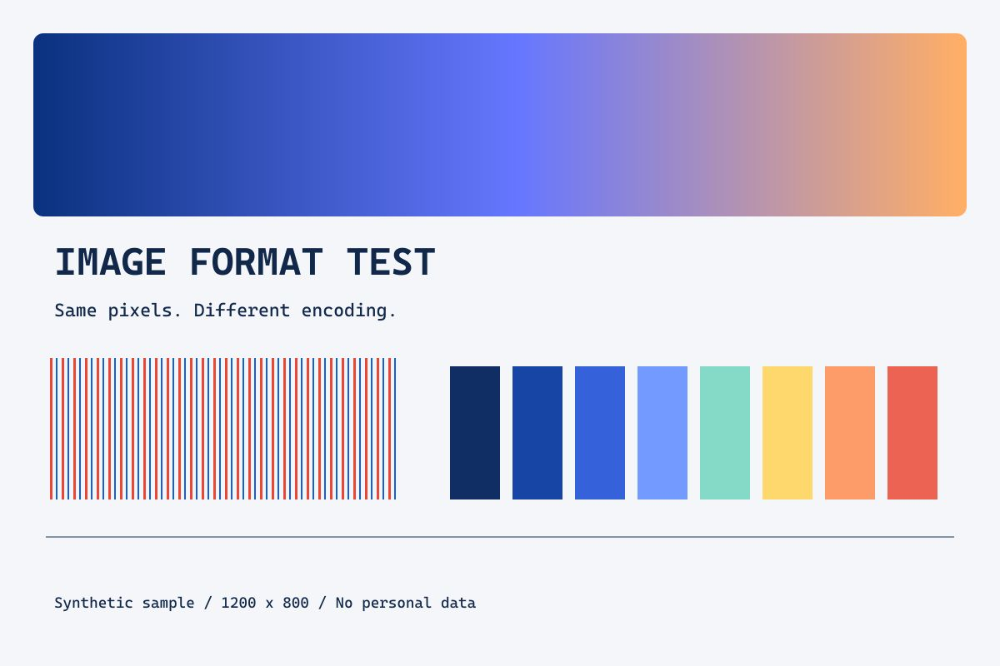
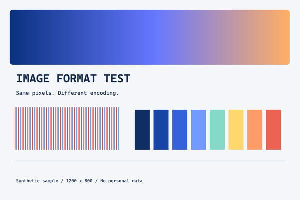

送信上限に収めるなら「容量」、画面に合う大きさにするなら「幅・高さ」を確認します。まず必要な寸法に縮小し、その後に保存形式や品質を調整すると、何を変えたか分かりやすくなります。
画像には別々の「大きさ」がある
| 数値 | 意味 | 例 |
|---|---|---|
| 幅×高さ（px） | 画像を構成する画素の並び | 1200×800px |
| 画素数 | 幅と高さを掛けた数 | 960,000画素 |
| ファイル容量（B・KB・MB等） | 保存や転送に必要なデータ量 | 53,392バイト |
| 画面上の表示幅 | ページやアプリが表示する大きさ | 同じ画像でもスマートフォンでは小さく表示 |
「サイズを小さくして」と言われたときは、どの数値のことかを確かめます。幅だけ小さく表示しても、元の画像ファイルが変わらなければ、ダウンロードする量はそのままです。逆に保存品質を下げれば、幅と高さを保ったまま容量を減らせる場合があります。
印刷では、同じ画素数でも印刷する実寸によって細かさが変わります。この記事はWeb共有やファイル送信を対象としており、印刷用の解像度設定とは分けて考えます。
縦横比を保った縮小を計算する
1200×800pxの画像を幅600pxにすると、高さは400pxです。幅も高さも半分なので、画素数は4分の1になります。幅だけ600px、高さは800pxのままにすると、縦に細長く変形してしまいます。
入力した数値はブラウザー内だけで計算し、送信・保存しません。画像を選択する機能はありません。
変更後の高さ ＝ 元の高さ × 変更後の幅 ÷ 元の幅 画素数の比率 ＝ 変更後の画素数 ÷ 元の画素数
高さは整数に丸めます。小さすぎる寸法では比率に丸め誤差が生じます。必要以上に拡大しても、元にない細部が戻るわけではありません。
画素数25％でも、容量は約39％だった
形式比較の記事と同じ人工サンプルを、同じJPEG品質80で2通り保存しました。どちらも原本の画素から直接作成しており、大きいJPEGを再圧縮したものではありません。
| 寸法 | 画素数 | 容量 |
|---|---|---|
| 1200×800px | 960,000 | 53,392 B |
| 600×400px | 240,000（25％） | 20,983 B（約39.3％） |
この実測では、画素数と容量は同じ割合になりませんでした。画像の内容、圧縮方式、書き出し設定にも左右されるため、「幅を半分にすれば必ず容量も半分」と計算することはできません。




上では同じ表示幅で並べています。リンクから画像を開くと元の寸法で確認できます。計測：2026年9月26日、sharp 0.35.4、JPEG品質80、4:2:0、縮小は既定のLanczos3。人物写真やスクリーンショットは使用していません。
容量制限があるときの作業順
- 相手の指定を確認する。例として「JPEG・横1200px以下・1MB以下」のように、形式、寸法、容量を別々にメモします。指定がない条件を自己判断で追加する必要はありません。
-
原本のコピーを作る。ファイル名に
-sendなどの区別を付けます。原本を上書きせず、やり直せる状態にします。 - 必要な寸法まで縮小する。縦横比を固定します。文字が含まれるなら、実際に読む大きさで読めるかを先に確認します。
- 容量を確認する。上限を超えた場合だけ保存品質を下げるなど、次の調整をします。形式や品質は、使うアプリの保存・書き出し画面で指定します。
- 完成ファイルを開き直す。読みやすさ、色、透明部分、容量を確認します。提出先によってMBの扱いや上限判定が異なる場合があるため、上限ぎりぎりではなく少し余裕を持たせます。
機密書類や個人写真なら、容量を減らすためだけに外部の変換サイトへ送る前に、端末内の画像ソフトで処理できるかを検討してください。この記事の計算機は画像ファイルに触れず、寸法の数値だけを扱います。
参考資料・確認日
資料確認：2026年9月26日。機能や画面表記は更新により変わる場合があります。